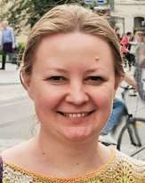

Dr. hab. inż. Anna Ivanova
|  |
Anna Ivanova / Anna A. Ivanova / Анна Иванова / Ganna Ivanova (in ukrainian version) |
| Doctor of technical science / Доктор технических наук / Doktor habilitowany inżynier |
| Head of Control Systems Theory Department / Зав. отделом теории управляющих систем |
| Institute of Applied Mathematics and Mechanics / Институт прикладной математики и механики |
| ivanova.iamm@mail.ru, anna.ivanova@ukr.net |
Research interests |
- mathematical modeling;
- inverse problems;
- control theory;
- model based predictive control for control system design;
- industrial mathematics;
- modeling of metal continuous casting;
- mathematical methods in economics.
|

My publications
Monograph / Монография
Tkachenko V.N., Ivanova A.A., Krasnikov A.L., Tkachenko A.V., Chernyshev N.N. Parametric identification, analysis and synthesis of control systems of technological process. - Slavyansk: Publishing house IPMM NASU, 2016. - 525с. ISBN 978-966-02-7687-1. (in russian) / Ткаченко В.Н., Иванова А.А., Красников А.Л., Ткаченко А.В., Чернышев Н.Н. Параметрическая идентификация, анализ и синтез систем управления технологическими процессами. - Славянск: Изд-во ИПММ НАНУ, 2016. – 525с., тираж 100 экз. ISBN 978-966-02-7687-1.
Articles / Papers / Статьи
- А.А. Иванова. Математическая модель процесса затвердевания непрерывного слитка в кристаллизаторе (Mathematical model of slab crystallization process in mold area.) // Труды ИПММ НАН Украины. – Вып.9. – Донецк, ИПММ. – 2004. – С.81-88. (in russian)
- Ткаченко В.Н., Иванова А.А., Волуева О.С. Основные функции компьютерной системы управления процессом непрерывной разливки стали (The basic functions of the computer-based continuous steel casting process control system.) // Наукові праці Донецького національного Технічного Університету. - Серія "Обчислювальна техніка та автоматизація." - Вмп. 88. - Донецьк: ДонНТУ, - 2005 - С.63-69. (in russian)
- Ткаченко В.Н., Иванова А.А., Волуева О.С. Разработка многоуровневой иерахической системы управления технологическим процессом непрерывной разливки стали (An elaboration of multilevel hierarchical control system of continuous steel casting process.) // Академический вестник - №17-18. - Кривой Рог: КрТО МАКНС, - 2006 – с.27-31. (in russian)
- А.А Иванова. Математическая модель процесса затвердевания непрерывного слитка в зоне вторичного охлаждения. (Mathematical model of slab crystallization process in the secondary cooling zone.)// Труды ИПММ НАН Украины. – Вып.12. – Донецк, ИПММ. – 2006. – С.76-84. (in russian)
- В.Н. Ткаченко, А.А. Иванова. Анализ температурных полей криволинейной МНЛЗ на основе математического моделирования. // Матеріали 3-ї міжнародної науково-практичної конференції “Прогресивні технології у металургії сталі: ХХІ сторіччя”. – Донецьк: ДонНТУ. – 2007. – С. 242-249.
- Ткаченко В. Н., Иванова А.А., Василян Г. Р. Идентификация параметров внешнего теплообмена в зоне вторичного охлаждения МНЛЗ. Вісник Національного технічного університету ”Харківський політехнічний інститут”. Збірник наукових праць. Тематичний випуск: Інформатика і моделювання. – Харків: НТУ “ХПІ”. – 2007. – № 39. – С. 168-177.
- В.Н. Ткаченко, А.А. Иванова, О.В. Шуба. Методы и алгоритмы идентификации параметров внешнего теплообмена процессов тепломассопереноса. // Известия Саратовского университета. 2008. Т.8. Сер. Математика. Механика. Информатика, вып. 1. – Саратов: СГУ. – С. 58 – 64.
- Ткаченко В.Н., Иванова А.А. Моделирование и анализ теплового поля непрерывного слитка криволинейной машины непрерывного литья заготовок. // Электронное моделирование. – 2008. – Т.30, – №3. – С.87-103.
- Иванова А.А. Исследование температурных градиентов непрерывного слитка. // Труды ИПММ НАН Украины. – Вып.16. – Донецк, ИПММ. – 2008. – С.93-102.
- Иванова А.А. Управление режимами вторичного охлаждения МНЛЗ. Доклады XV международной конференции по автоматическому управлению «Автоматика – 2008», Одесса, – 2008. – С.221-224.
- Иванова А.А. Управление режимами вторичного охлаждения МНЛЗ. //Металлургические процессы и оборудование. – №4(14) – декабрь 2008. – С.17-21.
- Ткаченко В.Н., Иванова А.А. Метод наименьших квадратов для задачи идентификации параметров внешнего теплообмена процесса непрерывной разливки стали. // Вісник Східноукраїнського національного університету імені Володимира Даля. – №1(119) – 2008. – С.167-173.
- Ivanova G.O. Identification of Convection Heat Transfer Coefficient of Secondary Cooling Zone of Based on Least Squares Method and Stochastic Approximation Method. //Труды ИПММ НАН Украины. 2008. Т.17. С.61-73.
- А.А. Иванова. Динамика температурных градиентов непрерывнолитого слитка. // Металлургические процессы и оборудование. – №2(16) – 2009. – С.7-12.
------------------------
- Иванова Анна Александровна. Система автоматического управления режимами охлаждения металла машины непрерывного литья заготовок. Автореферат диссертации на соискание ученой степени кандидата технических наук по специальности 05.13.07 - Автоматизация процессов управления. ГВУЗ «Донецкий национальный технический университет», – 2010, – 20 с.
- Anna Ivanova. Identification of Convection Heat Transfer Coefficient of Secondary Cooling Zone of Based on Least Squares Method and Stochastic Approximation Method // http://arxiv.org/abs/1003.4657
- Иванова А.А. Моделирование процесса кристаллизации, идентификация параметров внешнего теплообмена и управление расходами воды в зоне вторичного охлаждения МНЛЗ. // Вісник Донбаської державної машинобудівної академії №1(18) 2010 С. 127 – 131.
- А. А. Иванова. Метод наименьших квадратов в задаче идентификации параметров внешнего теплообмена зоны вторичного охлаждения МНЛЗ. Материалы международной научной конференции “Интеллектуальные системы принятия решений и проблемы вычислительного интеллекта (ISDMCI '2011)”, 16-20 мая 2011 года (г. Евпатория, Крым, Украина). С.73 – 76.
- Иванова А.А. Критерии качества температурного поля непрерывного слитка. // Металлург – 2011. – № 10. – С. 47–53.
- Иванова А.А. Моделирование температурного поля непрерывного слитка для различных параметров форсуночного охлаждения. // Сборник научных трудов конференции «Инновационные технологии внепечной металлургии чугуна и стали» (Донецк, 25 – 26 октября 2011). С. 249 – 254.
- A.A.Ivanova. Criteria of the quality of the temperature field of a continuous-cast ingot. Metallurgist, Vol. 55, Nos. 9–10, January, 2012. pp. 710-719.
- Иванова А.А., Капитанов В.А., Куклев А.В. Методика расчета оптимальных параметров форсуночного охлаждения непрерывнолитого сляба. // Металлург – 2012. – № 3. – С. 45–49.
- Иванова А.А. 3-D математическая модель температурного поля непрерывного слитка // Труды ИПММ НАН Украины. – 2011. – Т. 23. – С. 100-109.
- A. A. Ivanova, V. A. Kapitanov and A. V. Kuklev. Method of calculating the optimum parameters for the air-mist cooling of a continuous-cast slab. Metallurgist, Vol.56, Nos. 3 – 4, July, 2012, p.173–179.
- Anna Ivanova. Model predictive control of secondary cooling modes in continuous casting. The proceedings of Metal 2013: 22st International Conference on Metallurgy and Materials, May 15th - 17th 2013, Brno, Czech Republic, EU.
- Иванова А.А. Прогнозное управление расходом воды в зоне вторичного охлаждения МНЛЗ. // Металлург – 2013. – № 7. – С. 34–39.
- A.A. Ivanova. Calculation of Phase-Change Boundary Position in Continuous Casting. ARCHIVES of FOUNDRY ENGINEERING, Volume 13, Issue 4/2013, p. 57-62.
- Ivanova, A. Model predictive control of continuous ingot solidification. IFAC Proceedings Volumes (IFAC-PapersOnline) Volume 15, Issue PART 1, 2013, p. 444-448.
- A. A. Ivanova. Predictive Control of Water Discharge in the Secondary Cooling Zone of a Continuous Caster. Metallurgist, Vol. 57, Nos. 7–8, November, 2013, p.592–599.
- А.И. Бородин, А.А. Иванова. Моделирование температурного поля непрерывнолитого слитка с определением положения границы фазового перехода. Инженерно-физический журнал. 2014, Т. 87, № 2. С. 492–497. (ИФЖ, Беларусь)
- A. I. Borodin, A. A. Ivanova. Modeling of the Temperature Field of a Continuously Cast Ingot with Determination of the Position of the Phase-Transition Boundary. Journal of Engineering Physics and Thermophysics. Vol.87, No 2, March, 2014, pp. 507-512.
- Anna Ivanova, Sergey Strichenko. Dependence of billet liquid pool shape on various continuous casting parameters. Proceedings of 8th European Continuous Casting Conference, 23 – 26 June 2014, Graz, Austria, EU, p.1428-1435.
- Капитанов В.А., Иванова А.А. Влияние пропорционального распределения общего излишка на имущественное расслоение. Экономика и прогнозирование (Економіка і прогнозування). 2014, №2, С. 125-136.
- Бирюков А.Б., Иванова А.А. Метод определения рациональной интенсивности вторичного охлаждения непрерывнолитой слябовой заготовки // Металлург. 2014. № 11. C. 47-51.
- Бирюков А.Б., Сафьянц С.М., Иванова А.А., Андриенко Е.Н. Современные подходы к диагностике процессов тепловой обработки металла в печах. // "Бюллетень научно-технической и экономической информации "Черная металлургия". 2015. № 1(1381). С. 50 – 55.
- Бирюков А.Б., Иванова А.А. Диагностика теплотехнических параметров работы кристаллизаторов МНЛЗ. // "Бюллетень научно-технической и экономической информации "Черная металлургия". 2015. № 2(1382). С. 49 – 54.
- Бирюков А. Б., Иванова А. А. Рациональные параметры тепловой работы зоны вторичного охлаждения слябовых МНЛЗ. // Сталь, № 2, 2015, C. 18 – 21.
- A.B. Biryukov, A. A. Ivanova. Method of Determining an Efficient Rate for the Secondary Cooling of a Continuous-Cast Slab. Metallurgist, Vol. 58, Nos. 11–12, March, 2015, p.967–972.
- Бирюков А.Б., Иванова А.А. Современные подходы к эффективному управлению теплотехническими процессами в зоне вторичного охлаждения МНЛЗ. // "Бюллетень научно-технической и экономической информации "Черная металлургия". 2015. №3(1383). С.46 – 52.
- Иванова А.А. Изменение формы жидкой лунки при варьировании параметров непрерывной разливки стали. // Металлург. 2015. № 4. C. 36-40.
- Anna Ivanova. Mathematical model of temperature field and mushy zone position of continuous ingot. METEC & 2nd ESTAD 2015 European Steel Technology and Application Days, Dusseldorf, Germany, 15 – 19 June 2015
- Бирюков А.Б., Иванова А.А. Современные подходы к математическому моделированию теплотехнических процессов в литейно-прокатных модулях на участке МНЛЗ – нагревательное устройство. // "Бюллетень научно-технической и экономической информации "Черная металлургия". 2015. Вып.7 (1387). С.50 – 55.
- A. A. Ivanova. Changes in the Form of the Liquid Crater with Variation of the Process Parameters in the Continuous Casting of Steel. Metallurgist, Vol. 59, Nos. 3–4, July, 2015, p.308–314
- Бирюков А.Б., Иванова А.А. Сравнительный анализ использования пламенных печей и индукционных подогревателей для тепловой обработки металла в литейно-прокатных агрегатах. // "Бюллетень научно-технической и экономической информации "Черная металлургия". 2015. Вып.12 (1392). С.40 – 46.
- Бирюков А.Б., Иванова А.А. Математическое моделирование теплотехнических процессов в литейно-прокатных модулях на участке МНЛЗ – нагревательное устройство. Металлургия: технологии, инновации, качество. «Металлургия – 2015». Труды XIX Международной научно-практической конференции 15−16 декабря 2015 года (г. Новокузнецк, РФ). С.135 – 140.
- Wolczynski, W., Lipnicki, Z., Bydalek, A.W., Ivanova A.A. Structural Zones in Large Static Ingot. Forecasts for Continuously Cast Brass Ingot. Archives of Foundry Engineering, Vol.16, Issue 3/2016, pp. 141 – 146.
- Капитанов В.А., Иванова А.А. Перспективы применения принципа рангового обмена для социально-экономического анализа и прогноза. Материалы IX Международной научно-практической конференции "Инновационное развитие российской экономики". Москва, 25 - 28 октября 2016 г. : в 6 т. – Москва : ФГБОУ ВО «РЭУ им. Г. В. Плеханова», 2016. Т. 2 : Статистическое исследование развития экономики. – 456 с., стр. 156 – 160.
- Капитанов В.А., Иванова А.А. Неравенство и ранговый обмен. // Россия: тенденции и перспективы развития. Ежегодник. Вып. 12. / РАН. ИНИОН. Отд. науч. сотрудничества. – М., 2017. – Ч. 1. C. 661-667.
- Капитанов В.А., Иванова А.А. Границы применимости рангового обмена. // Материалы XVI Международной научной конференции «Модернизация России: приоритеты, проблемы, решения». Электронный ресурс http://www.rkpr.inion.ru/inion/items.html?kind=dok&category=100002650 Вышла с сборнике «Россия: тенденции и перспективы развития». Ежегодник. Вып. 12. / РАН. ИНИОН. Отд. науч. сотрудничества. – М., 2017. – Ч. 2. C. 123-134.
- Kwapisiński, P., Ivanova, A.A., Kania, B., Wołczyński, W. Some Similarities / Differences between Steel Static and Virtual Brass Static Casting. Archives of Foundry Engineering. Issue 17(1), 2017. pp. 109 – 114.
- Kwapisiński, P., Lipnicki, Z., Ivanova, A.A., Wołczyński, W. Role of the Structural and Thermal Peclet Numbers in the Brass Continuous Casting. Archives of Foundry Engineering. Vol.17 Issue 2/2017. pp. 49 – 54.
- Капитанов В. А., Иванова А. А. Критика экономических основ национализма. Статистика и экономика. Т.14, №4, 2017, С. 4 – 13.
- Wołczyński W., Ivanova A.A., Kwapisiński P., Olejnik E. Structural transformations versus hard particles motion in the brass ingots. Arch. Metall. Mater. 62 (2017), 4, 2455-2461.
- Бирюков А. Б., Иванова А. А. Математическое моделирование теплового состояния заготовки, формирующейся в кристаллизаторе, с использованием системы диагностики теплотехнических процессов. Современные проблемы электрометаллургии стали: мате- риалы XVII Международной конференции: в 2 ч. / под ред. В.Е. Рощина. – Челябинск: Издательский центр ЮУрГУ, 2017. – Ч. 2. С. 3-10. (3-6 октября 2017 г. Старый Оскол, РФ)
- Капитанов В.А., Иванова А.А. Сравнительный анализ индексов имущественного неравенства. Материалы X Международной научно-практической конференции "Инновационное развитие российской экономики", Москва, РФ, 25-27 октября 2017 г. в пяти томах, Том 3 «Статистические и инструментальные методы исследования развития» С. 189-194.
- Бирюков А. Б., Иванова А. А. Современные подходы к диагностике теплотехнических параметров работы литейно-прокатных агрегатов на участке МНЛЗ – нагревательное устройство. Труды XX Международной научно-практической конференции «МЕТАЛЛУРГИЯ: ТЕХНОЛОГИИ, ИННОВАЦИИ, КАЧЕСТВО» «МЕТАЛЛУРГИЯ - 2017» Россия, г. Новокузнецк, СибГИУ, 15-16 ноября 2017 г. Часть 1, С. 348-352. Электронный ресурс: http://www.sibsiu.ru/nauka-i-innovacii/konferentsii-seminary-vystavki/metallurgiya/
- Бирюков А. Б., Иванова А. А., Сафьянц С.М. Оценка температурного состояния непрерывнолитой заготовки при засорении форсунок зоны вторичного охлаждения. Материалы XIV Всероссийской научно-практической конференции с международным участием «Современные проблемы горно-металлургического комплекса. Наука и производство», Старый Оскол, РФ, 23-24 ноября 2017 г. Т.1, С. 7-13.
- Бирюков А. Б., Иванова А. А. Математическое моделирование теплового состояния заготовки, формирующейся в кристаллизаторе, с использованием системы диагностики теплотехнических процессов. // "Бюллетень научно-технической и экономической информации "Черная металлургия". 2018. Вып.1 (1417). С.65-68. (Вышла ранее в Современные проблемы электрометаллургии стали: материалы XVII Международной конференции: в 2 ч. / под ред. В.Е. Рощина. – Челябинск: Издательский центр ЮУрГУ, 2017. – Ч. 2. С. 3-10. (3-6 октября 2017 г. Старый Оскол, РФ)
- Гинкул С.И., Бирюков А.Б., Иванова А.А., Гнитиев П.А. Прогнозная математическая модель процесса нагрева металла в печах с шагающими балками // Металлург. 2018. № 1. С. 24-28.
- Бирюков А. Б., Иванова А. А. Современные подходы к диагностике теплотехнических параметров работы литейно-прокатных агрегатов на участке МНЛЗ – нагревательное устройство // "Бюллетень научно-технической и экономической информации "Черная металлургия". 2018. Вып.2 (1418). С.44-47. (Вышла ранее в трудах XX Международная научно-практическая конференция «МЕТАЛЛУРГИЯ: ТЕХНОЛОГИИ, ИННОВАЦИИ, КАЧЕСТВО» «МЕТАЛЛУРГИЯ - 2017» http://www.sibsiu.ru/nauka-i-innovacii/konferentsii-seminary-vystavki/metallurgiya/ Россия, г. Новокузнецк, СибГИУ, 15-16 ноября 2017 г.)
- Капитанов В.А., Иванова А.А., Максимова А.Ю. Преимущества функции распределения как метода графического представления экономической структуры общества. Статистика и Экономика. 2018;15(1):4-16. DOI:10.21686/2500-3925-2018-1-4-16
- Бирюков А.Б., Гинкул С.И., Гнитиев П.А., Иванова А.А. Математическое моделирование работы печей с шагающими балками // Вестник ДонНТУ №1(11)'2018. С. 48-52.
- Бирюков А.Б., Иванова А.А. Диагностика температурного состояния металла при его тепловой обработке в печах непрерывного действия // Металлург. 2018. № 4. С. 33-37.
- Ginkul, S. I., Biryukov, A. B., Ivanova, A. A., and Gnitiev, P. A. Predictive mathematical model of the process of metal heating in walking-beam furnaces. Metallurgist, Vol. 62, Nos. 1–2, May, 2018, p. 15-21.
- Biryukov, A. B., Ivanova, A. A. Diagnosis of Temperature Conditions in Metals When Heated in Continuous Furnaces. Metallurgist, Vol. 62, Nos. 3-4, July, 2018, p. 331-336.
- Капитанов В.А., Иванова А.А., Максимова А.Ю. Проблемы числовых оценок неравенства. Статистика и Экономика. 2018;15(4):4-15. DOI: 10.21686/2500-3925-2018-4-4-15.
- Иванова А.А., Капитанов В.А., Бирюков А.Б., Худотёплый В.В. Экспериментальное определение коэффициентов теплоотдачи при охлаждении непрерывнолитой заготовки водовоздушными форсунками. Вестник Донецкого национального технического университета, № 3(13), 2018, С. 57-63.
- Wołczyński W., Ivanova A.A., Kwapisiński P. Mathematical predictions of brass/steel ingot structures. Scientific journals of the Maritime University of Szczecin. 2018, 56(128), p. 47-54.
- Wołczyński W., Ivanova A.A. Use of a mathematical treatment for the prediction of structural zones localization in the continuously cast brass ingots. Proceedings of The 73rd World Foundry Congress “Creative Foundry”, 23-27 September 2018, Krakow, Poland.
- Бирюков А.Б., Иванова А.А. Основы построения и использования систем диагностики на базе анализа моментальных тепловых балансов. - Труды Института прикладной математики и механики. – Т.32. – 2018. – С. 13-22.
- Капитанов В.А., Иванова А.А., Максимова А.Ю. Недостатки и альтернативы общепринятых методов представления социального неравенства. Ежегодник «Россия: тенденции и перспективы развития», Вып. 14 / РАН. ИНИОН. Отд. науч. сотрудничества; Отв. ред. В.И. Герасимов. – М., 2019. – Ч. 1. – C. 95-100.
- Wołczyński W., Ivanova A.A., Kwapisiński P. On Consonance between a Mathematical Method for the CET Prediction and Constrained / Unconstrained Solidification. Procedia Manufacturing, Vol. 30, 2019, p. 459-466.
- Biryukov, A. B., Ivanova, A. A. Modeling of heat engineering parameters of casting and rolling complexes work. Archives of Foundry Engineering, Vol. 19, Issue 3/2019, p. 11-14.
- Anna Ivanova, Stanisław Migórski, Rafał Wyczółkowski, Dmitry Ivanov. Numerical identification of temperature dependent thermal conductivity using least squares method. International Journal of Numerical Methods for Heat and Fluid Flow.
- Бирюков А.Б., Иванова А.А. Управление процессом тепловой обработки металла в печи с помощью системы диагностики теплосодержания садки. // Металлург. 2019. № 8. С. 54-58.
- Victor Kapitanov, Anna Ivanova, Alexandra Maximova. Issues of Inequality Representation in Conditions of Deep Social Stratification. Materials of Special IARIW-HSE Conference “Experiences and Future Challenges in Measuring Income and Wealth in CIS Countries and Eastern Europe”, Moscow, Russia, September 17-18, 2019.
- Капитанов В.А., Иванова А.А., Максимова А.Ю. Выявление трендов падения доходов населения США на протяжении пяти последних десятилетий. Статистика и Экономика. 2019;16(5):94-110. DOI: 10.21686/2500-3925-2019-5-94-110. For citation: Kapitanov V.A., Ivanova A.A., Maksimova A.Y. Identification of trends in the decline in US income over the past five decades. Statistics and Economics. 2019;16(5):94-110. (In Russ.)
- Капитанов В.А., Иванова А.А., Максимова А.Ю. Представление неравенства и представления о неравенстве. Журнал «Экономист», № 11, 2019, С.58-71.
- Biryukov, A. B., Ivanova, A. A. Control of metal heat treatment process in a furnace using a diagnostic system based on batch heat capacity. Metallurgist, Vol. 63, Nos. 7-8, July-August, 2019, p. 829-835.
- Бирюков А.Б., Иванова А.А. Общие подходы к диагностике аэрогидродинамического состояния элементов теплотехнического оборудования. - Труды Института прикладной математики и механики. – Т.33. – 2019. – С. 3-10.
- Максимова А.Ю., Иванова А.А., Лозинский Н.С. Регрессионная модель для прогнозирования температуры вспышки дизельного топлива в закрытом тигле // Информатика и кибернетика. № 4 (18), 2019, Донецк, ДонНТУ, С. 5-13.
^ToTop^Наверх^
Abstracts on Conferences / Тезисы
- Іванова Г.О. Математична модель теплового поля кристалізатора МНЛЗ. //Тези доповідей. Конференція молодих учених із сучасних проблем механіки і математики ім. акад. Я.С. Підстригача. – Львів, 24 – 27 травня 2005р. – с. 286-287.
- Иванова А.А. Математическая модель теплового поля зоны вторичного охлаждения МНЛЗ. //Тези доповідей. Одинадцята міжнародна наукова конференція ім. акад. М. Кравчука. – Київ, 18 – 20 травня 2006р. – с.110.
- Ткаченко В.Н., Иванова А.А., Шуба О.В. Методы и алгоритмы идентификации параметров внешнего теплообмена процессов тепломассопереноса. //Тезисы докладов Международной научной конференции «Компьютерные науки и информационные технологии», посвящённой памяти профессора А.М. Богомолова. – Саратов, 2 – 4 июля 2007г. – с.121 –123.
- Иванова А.А. Идентификация коэффициента конвективной теплоотдачи в зоне вторичного охлаждения МНЛЗ с помощью метода наименьших квадратов. // Сборник тезисов Десятой Международной научно-технической конференции «Моделирование, идентификация, синтез систем управления» – Москва – Донецк, 16 – 23 сентября 2007г. – с. 115-116.
- Иванова А.А. Анализ температурных напряжений внутри непрерывного слитка на основе математического моделирования. //Сборник материалов международной научной школы-конференции «Тараповские чтения» – Харьков, 21 – 25 апреля 2008г. – с. 228-229.
- G. Ivanova. Stochastic approximation for identification of convection heat transfer coefficient in the secondary cooling zone of steel continuous casting process. // Book of abstracts of The 16th Conference on Applied and Industrial Mathematics CAIM 2008 (Romania, Oradea, October 9-11, 2008) p. 35-36. 16-я Конференция по Прикладной и Индустриальной Математики CAIM 2008 (Румыния,Орадея, 9-12 октября 2008).
- Иванова А.А. Математическая модель нестационарного теплового поля в кристаллизаторе МНЛЗ. // Материалы XVII международной научно-технической конференции «Прикладные задачи математики и механики» – Севастополь, 14-18 сентября 2009г. – С.269-271.
- Ткаченко В.Н., Иванова А.А., Шуба О.В. Идентификация параметров внешнего теплообмена задач тепломассопереноса. // Сборник тезисов двенадцатой международной научно-технической конференции «Моделирование, идентификация, синтез систем управления» – Москва – Донецк, 16 – 23 сентября 2009г. – С. 181-182
- В.Н. Ткаченко, А.А. Иванова. Имитационное моделирование процесса управления вторичным охлаждением машины непрерывного литья заготовок. // Тези доповідей П’ятої науково-практичної конференції з міжнародною участю «Математичне та імітаційне моделювання систем МОДС’2010» – Київ, 21 – 25 червня 2010 – С. 157 - 159
- Иванова А.А. Структура управляющих воздействий и методы управления охлаждением непрерывного слитка. // Сборник тезисов Тринадцатой Международной научно-технической конференции «Моделирование, идентификация, синтез систем управления» – Москва – Донецк, 12 – 19 сентября 2010г. – С. 140-141.
- Ganna Ivanova. Operative adaptation of mathematical model of heat and mass transfer of continuous casting. Book of abstract of the 18th Conference on applied and industrial mathematics CAIM 2010 (October 14 – 17, 2010, Iasi, Romania), p.47.
- Иванова А.А. Прогнозное управление охлаждением непрерывного слитка. Международная научная конференция «Современные проблемы математики и её приложения в естественных науках и информационных технологиях (ХАРЬКОВ, 17-22 апреля 2011 г).
- А. А. Иванова. Математическая модель для расчета конструктивных параметров форсуночного охлаждения непрерывного слитка. // Сборник тезисов XIV Международной научно-технической конференции «Моделирование, идентификация, синтез систем управления» – Москва – Донецк, 11 – 18 сентября 2011г. – С. 149-151.
- Ganna Ivanova. MPC of secondary cooling in continuous casting. // XIII International Scientific Conference "New Technologies and Achievements in Metallurgy and Material Engineering" (Częstochowa, Polska, May 30 – June 01 2012).
- Anna Ivanova. Determination of optimal distribution of external heat extract coefficient in the secondary cooling of continuous casting. THE 20th CONFERENCE ON APPLIED AND INDUSTRIAL MATHEMATICS, Dedicated to Academician Mitrofan M. Cioban, CAIM 2012, Chisinau, Republic of Moldova, August 22-25, 2012
- А. А. Иванова. Оперативная настройка параметров теплоотдачи математической модели температурного поля непрерывнолитой заготовки. // Сборник тезисов XV Международной научно-технической конференции «Моделирование, идентификация, синтез систем управления» – Москва – Донецк, 09 – 16 сентября 2012г. – С. 153-154
- А. А. Иванова. Метод наименьших квадратов в решении внутренней обратной задачи теплопроводности. // Сборник тезисов Международной научной конференции «Современная информатика: проблемы, достижения, и перспективы развития», посвященной 90-летию академика В.М. Глушкова. (Киев, 12-13 сентября 2013 г.) – С. 144.
- Anna A. Ivanova. Identification of the thermal conductivity coefficient as distributed parameter using least squares method. ICIPE2014 8th International Conference on Inverse Problems in Engineering, May 12–15, 2014, Krakow, Poland, p. 81-82.
- Anna Ivanova. Mathematical model of temperature field and mushy zone position of continuous ingot. METEC & 2nd ESTAD 2015 European Steel Technology and Application Days, Dusseldorf, Germany, 15 – 19 June 2015.
- Капитанов В.А., Иванова А.А. Принцип рангового обмена и границы его применимости. I Международная научная конференция Донецкие чтения 2016. Образование, наука и вызовы современности г. Донецк, 16-18 мая 2016 г.
- А. А. Иванова, А. Н. Курганский. Математическое моделирование положения двухфазной зоны в непрерывнолитом слитке. XV Минский международный форум по тепломассообмену, Минск, 23-26 мая 2016. Стр. 331-334.
- Wołczyński, W., Kania, B., Bydałek, A.W., Kwapisiński, P., Ivanova, A.A.. Correlation between Thermal Gradients’ Field and Structure Formation in Steel Static and Continuously Cast Brass Ingot. 18th International Conference on Crystal Growth and Epitaxy (ICCGE-18) August 7-12, 2016, Nagoya, Japan.
- Z. Lipnicki, P. Kwapisiński, A.W. Bydałek, A.A. Ivanova, W. Wołczyński. Some similarities and differences between steel static and brass continuous casting. 57th International Scientific Conference "Solidification and Crystallization of Metals 2016" 19 - 21 September 2016, Kielce - Cedzyna, Poland
- P. Kwapisiński, A.A. Ivanova, W. Wołczyński, E. Olejnik. Control of structural zones formation and hard particles motion in the brass ingots. XVII Międzynarodowa Konferencja Naukowa "Zapewnienie jakości w odlewnictwie i spawalnictwie" Grand Hotel Permon, Słowacja, 9-11.05.2017
- А.А. Иванова, В.А. Капитанов. Моделирование имущественного расслоения при пропорциональном распределении общего излишка. Международный конгресс IS&IT’17 "Интеллектуальные системы и информационные технологии-2017", Россия, Краснодарский край, пос. Дивноморское, 2 – 9 сентября 2017.
- Wołczyński W., Kwapisiński P., Ivanova A.A., Olejnik E. Dominant role of the columnar structure in the brass ingots continuous casting. International Scientific Conference on "Achievements in Mechanical and Materials Engineering" AMME`2017, Gliwice - Wisła, Poland, 22 – 25 October 2017, p.100.
- Капитанов В.А., Иванова А.А. Сравнительный анализ индексов имущественного неравенства. X Международная научно-практическая конференция "Инновационное развитие российской экономики", Москва, РФ, 25-27 октября 2017 г.
- Ivanova A., Migorski S., Wyczolkowski R. Numerical identification of temperature dependent thermal conductivity using least squares method. International Conference on Computational Heat and Mass Transfer ICCHMT2018, Cracow, Poland, 23-26 May 2018.
- Wołczyński W., Ivanova A.A., Kwapisiński P. Struktura wlewka z mosiądzu/stali via prognozowanie matematyczne / Brass/Steel Ingot Structure via Mathematical Predictions. VII Krajowa Konferencja “Nowe Materiały – Nowe Technologie w Przemyśle Okrętowym Akademia Morska, Szczecin, Poland, 11-14 June, 2018, p.52.
- Wołczyński W., Ivanova A.A., Kwapisiński P., Sztwiertnia K. Effect of Pulling Rate on the Structural Zone Localization in The Continuously Cast Brass ingot. The 7th International Conference on Solidification and Gravity. Sept. 3 - 6, 2018: Miskolc - Lillafüred, Hungary. p.131-137.
- Waldemar Wołczyński, Anna A. Ivanova and Piotr Kwapisiński. On consonance between a mathematical method for the cet prediction and constrained / unconstrained solidification. 14th Global Congress on Manufacturing & Management (GCMM 2018) 5 – 7 December 2018, Royal On The Park, Brisbane, Australia. p. 40.
- Иванова А. А., Иванов Д. Е. Математическое моделирование температурного поля непрерывного слитка на основе параллельных вычислений. Тезисы докладов Х Международной научно-технической конференции «Информационные технологии в промышленности» (ITI*2019), Минск, Беларусь. С. 81-83.
- Ivanova A. Mathematical modeling of dendritic crystal growth in mushy zone of metallic alloys. Book of abstracts International conference mechanisms and non-linear problems of nucleation and growth of crystals and thin films (www.mgctf.ru), Saint-Petersburg, Russia, 1-5 July 2019, p.34.
- Victor Kapitanov, Anna Ivanova, Alexandra Maximova. Issues of Inequality Representation in Conditions of Deep Social Stratification. Abstracts of Special IARIW-HSE Conference “Experiences and Future Challenges in Measuring Income and Wealth in CIS Countries and Eastern Europe”, Moscow, Russia, September 17-18, 2019.
- Максимова А.Ю., Иванова А.А., Лозинский Н.С. Корреляционно-регрессионный анализ влияния суммарного содержания ароматических углеводородов в бензине на его плотность. Материалы конференции «Донецкие чтения 2019: образование, наука, инновации, культура и вызовы современности». Том 1. Физико-математические и технические науки. Часть 1., С. 141-143.
^ToTop^Наверх^
My conferences / Список моих конференций
- Конференция молодых ученых по современным проблемам механики и математики им. акад. Я.С. Пидстрыгача. (г. Львов, 2005г.)
- Международная научно-техническая конференция «Интегрированные системы управления в горно-металлургическом комплексе» ІСУГМК-2006 (г. Кривой Рог, 2006г.)
- Одиннадцатая международная научная конференция им. акад. М. Кравчука. (г. Киев, 2006г.)
- 3-я международная научно-практическая конференция «Прогрессивные технологии в металлургии стали: ХХI век» (г. Донецк, 2006г.)
- Международная научная конференция «Компьютерные науки и информационные технологии», посвящённая памяти профессора А.М. Богомолова. (г. Саратов, 2007г.)
- Десятая Международная научно-техническая конференция «Моделирование, идентификация, синтез систем управления» (Москва – Донецк, 2007г.),
- Международная научная школа-конференция «Тараповские чтения» (г. Харьков, 2008г)
- 6th European Conference on Continuous Casting 2008 (ECCC 2008) 3-6 June 2008, Riccione, Italy
- IV международная научно-техническая конференция «Металлургические процессы и оборудование» (Донецк, 17 сентября 2008г.)
- XV международная конференция по автоматическому управлению «Автоматика – 2008» (Одесса, 23 – 26 сентября 2008г.)
- T/he 16th Conference on Applied and Industrial Mathematics CAIM 2008 (Romania, Oradea, October 9-11, 2008); 16-я Конференция по Прикладной и Индустриальной Математики CAIM 2008 (Румыния, Орадея, 9-12 октября 2008); http://www.romai.ro/website/english/conferences.html/
- Международная научно-практическая конференция «Современный электропривод, информационные технологии и системы автоматизации» (Краматорск, 25-27 марта 2009)
- 5th Conference on Applied Inverse Problems, July 20-24, 2009, Vienna, Austria
- XVII международная научно-технической конференция «Прикладные задачи математики и механики» (г.Севастополь, 14-18 сентября 2009г.)
- Двенадцатая международная научно-техническая конференция «Моделирование, идентификация, синтез систем управления» (Москва – Донецк, 16 – 23 сентября 2009г.)
- Пятая научно-практическая конференция с международным участием «Математическое и имитационное моделирование систем МОДС’2010» (Киев, 21 – 25 июня 2010)
- Тринадцатая международная научно-техническая конференция «Моделирование, идентификация, синтез систем управления» (Москва – Донецк, 12 – 19 сентября 2010г.)
- THE 18th CONFERENCE ON APPLIED AND INDUSTRIAL MATHEMATICS CAIM 2010 (October 14 – 17, 2010, Iasi, Romania).
- Международная научная конференция «Современные проблемы математики и её приложения в естественных науках и информационных технологиях» (ХАРЬКОВ, 17-22 апреля 2011 г).
- Международная научная конференция “Интеллектуальные системы принятия решений и проблемы вычислительного интеллекта (ISDMCI '2011)”, 16-20 мая 2011 года (г. Евпатория, Крым, Украина).
- XIV Международная научно-техническая конференция «МОДЕЛИРОВАНИЕ, ИДЕНТИФИКАЦИЯ, СИНТЕЗ СИСТЕМ УПРАВЛЕНИЯ» (Москва – Донецк, 11 – 18 сентября 2011г.)
- Научно-техническая конференция «Инновационные технологии внепечной металлургии чугуна и стали» посвященная 140-летию ДМЗ (Донецк, 25 – 26 октября 2011 г.)
- XIII International Scientific Conference "New Technologies and Achievements in Metallurgy and Material Engineering" (Częstochowa, Polska, May 30 – June 01 2012).
- 20th Conference on applied and industrial mathematics CAIM 2012, Chisinau, Republic of Moldova, August 22-25, 2012.
- XV Международная научно-техническая конференция «МОДЕЛИРОВАНИЕ, ИДЕНТИФИКАЦИЯ, СИНТЕЗ СИСТЕМ УПРАВЛЕНИЯ» (Москва – Донецк, 9 – 16 сентября 2012г.)
- 22nd INTERNATIONAL CONFERENCE ON METALLURGY AND MATERIALS. May 15th - 17th 2013, Brno, Czech Republic, EU
- 15th IFAC symposium on Control, Optimization and Automation in Mining, Minerals and Metals Processing (MMM2013), 25 – 28 August 2013, San Diego, California, USA.
- V Международная научно-техническая конференция "МЕТАЛЛУРГИЧЕСКИЕ ПРОЦЕССЫ И ОБОРУДОВАНИЕ". (Донецк, 4 сентября 2013 г.)
- Международная научная конференции «Современная информатика: проблемы, достижения, и перспективы развития», посвященная 90-летию академика В.М. Глушкова. (Киев, 12-13 сентября 2013 г.)
- 54th International Scientific Conference “Solidification and Crystallization of Metals 2013”, 24 – 26 September 2013, Kielce-Cedzyna, Poland.
- ICIPE2014 8th International Conference on Inverse Problems in Engineering, May 12–15, 2014, Krakow, Poland, EU.
- 8th European Continuous Casting Conference, 23 – 26 June 2014, Graz, Austria, EU.
- METEC & 2nd ESTAD 2015 European Steel Technology and Application Days, Dusseldorf, Germany, 15 – 19 June 2015.
- Международная научно-практическая конференция "Математика в производственных процессах", 22-26 июня 2015 г., Санкт-Петербург, РФ.
- XIX Международная научно-практическая конференция «Металлургия: технологии, инновации, качество» 15 - 16 декабря 2015, Новокузнецк, РФ.
- I Международная научная конференция Донецкие чтения 2016. Образование, наука и вызовы современности. Донецк, 16-18 мая 2016 г.
- XVI International Scientific Conference „Quality Assurance In Foundry “. 17 – 19 May 2016, Arłamów, Poland.
- XV Минский международный форум по тепломассообмену, Минск, 23-26 мая 2016.
- 18th International Conference on Crystal Growth and Epitaxy (ICCGE-18) August 7-12, 2016, Nagoya, Japan.
- 57 th International Scientific Conference "Solidification and Crystallization of Metals 2016" 19 - 21 September 2016, Kielce - Cedzyna, Poland.
- IX Международная научно-практическая конференция "Инновационное развитие российской экономики". Москва, 25 - 28 октября 2016 г.
- XVI Международная научная конференция «Модернизация России: приоритеты, проблемы, решения». Москва, 20-21 декабря 2016 г.
- XVII Międzynarodowa Konferencja Naukowa "Zapewnienie jakości w odlewnictwie i spawalnictwie" Grand Hotel Permon, Słowacja, 9-11.05.2017
- Международная научно-практическая конференция «Статистические исследования социально-экономического развития России и перспективы устойчивого роста» НЕДЕЛЯ СТАТИСТИКИ РОССИЙСКОГО ЭКОНОМИЧЕСКОГО УНИВЕРСИТЕТА им. Г.В. ПЛЕХАНОВА (приурочено к 110-летию) Москва, РФ, 15-19 мая 2017 г.
- Международный конгресс IS&IT’17 "Интеллектуальные системы и информационные технологии-2017", РФ, Краснодарский край, пос. Дивноморское, 2-9 сентября 2017.
- ХVII международная научная конференция «Современные проблемы электрометаллургии стали» Старый Оскол, РФ, 3-6 октября 2017 г.
- International Scientific Conference on "Achievements in Mechanical and Materials Engineering" AMME`2017, Gliwice - Wisła, Poland, 22 – 25 October 2017.
- X Международная научно-практическая конференция "Инновационное развитие российской экономики", Москва, РФ, 25-27 октября 2017 г.
- XX Международная научно-практическая конференция «МЕТАЛЛУРГИЯ: ТЕХНОЛОГИИ, ИННОВАЦИИ, КАЧЕСТВО» «МЕТАЛЛУРГИЯ - 2017» http://www.sibsiu.ru/nauka-i-innovacii/konferentsii-seminary-vystavki/metallurgiya/ РФ, г. Новокузнецк, СибГИУ, 15-16 ноября 2017 г.
- XIV Всероссийская научно-практическая конференция с международным участием «Современные проблемы горно-металлургического комплекса. Наука и производство», Старый Оскол, РФ, 23-24 ноября 2017 г.
- XI International Conference on Computational Heat, Mass and Momentum Transfer ICCHMT’2018, May 21-24 2018, Cracow, Poland.
- VII Krajowa Konferencja “Nowe Materiały – Nowe Technologie w Przemyśle Okrętowym”, Akademia Morska, Szczecin, Poland, 11-14 June, 2018.
- The 7th International Conference on Solidification and Gravity. Sept. 3 - 6, 2018: Miskolc - Lillafüred, Hungary.
- The 73rd World Foundry Congress “Creative Foundry” 23 – 27 September 2018, Krakow, Poland.
- 14th Global Congress on Manufacturing & Management (GCMM 2018) 5 – 7 December 2018, Royal On The Park, Brisbane, Australia.
- X International Scientific Conference Information technologies in industry, logistics and the social sphere ITI*2019 May 23–24, 2019, Minsk / X Международная научно-техническая конференция Информационные технологии в промышленности, логистике и социальной сфере ITI*2019 23–24 мая 2019 года, Минск.
- International conference “Mechanisms and non-linear problems of nucleation and growth of crystals and thin films” MGCTF, Saint-Petersburg, Russia, 01 — 05 July 2019.
- Special IARIW-HSE Conference “Experiences and Future Challenges in Measuring Income and Wealth in CIS Countries and Eastern Europe”, Moscow, Russia, September 17-18, 2019.
- IV Международная научная конференция «Донецкие чтения 2019: образование, наука, инновации, культура и вызовы современности». Донецк, 29-31 октября 2019.
My page on Google / Мой сайт на Google
Старый сайт на UCOZ
^ToTop^Наверх^
Updated 12 April 2020